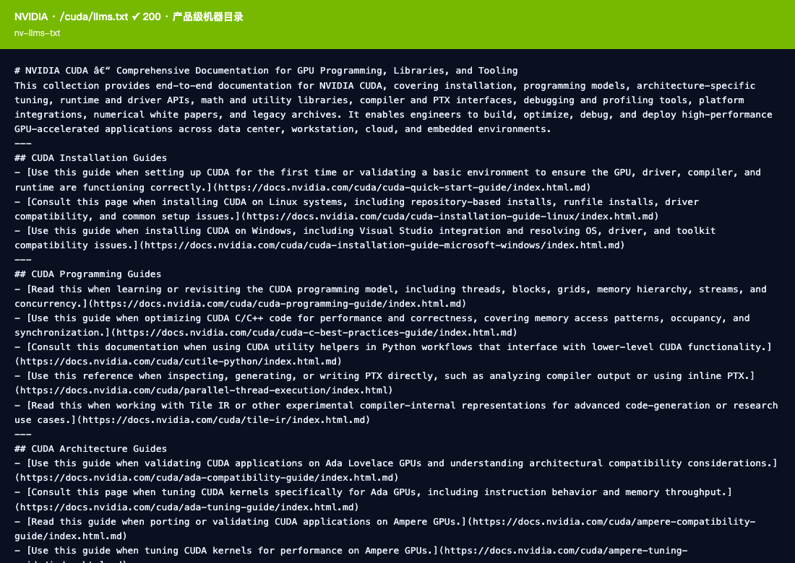
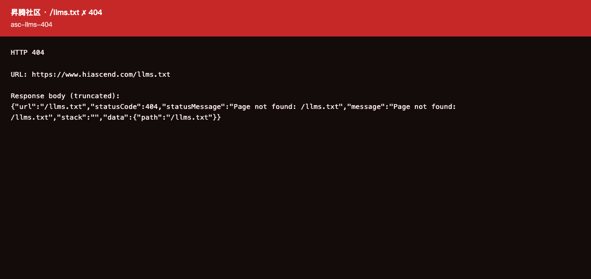
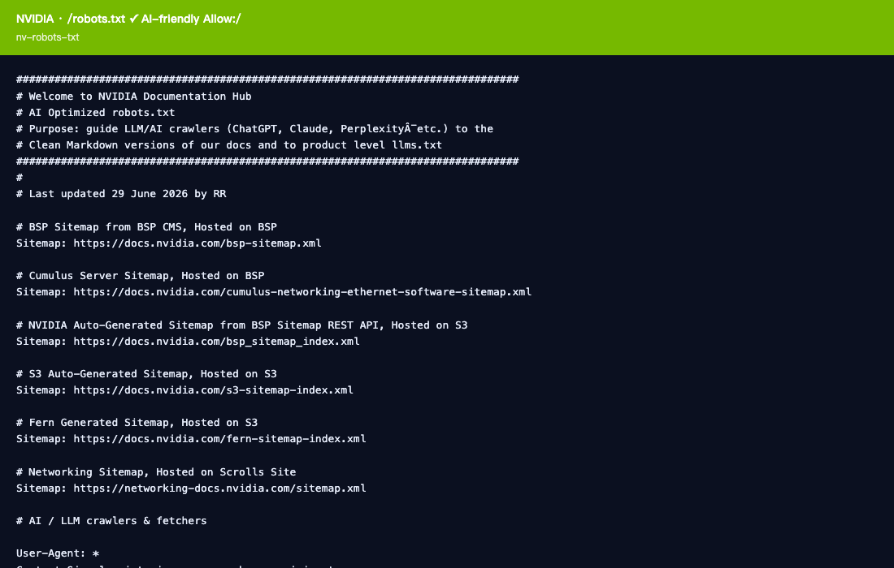
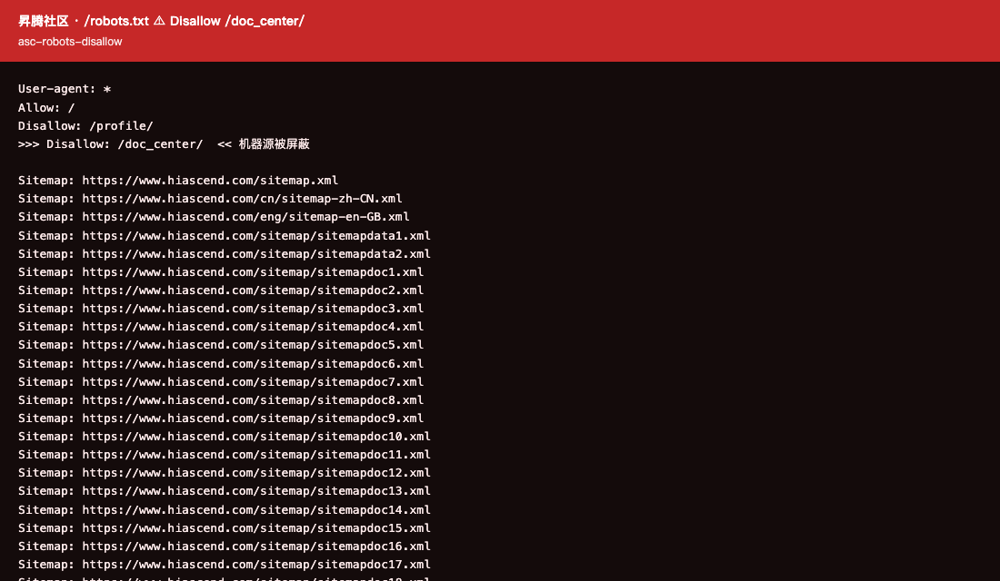
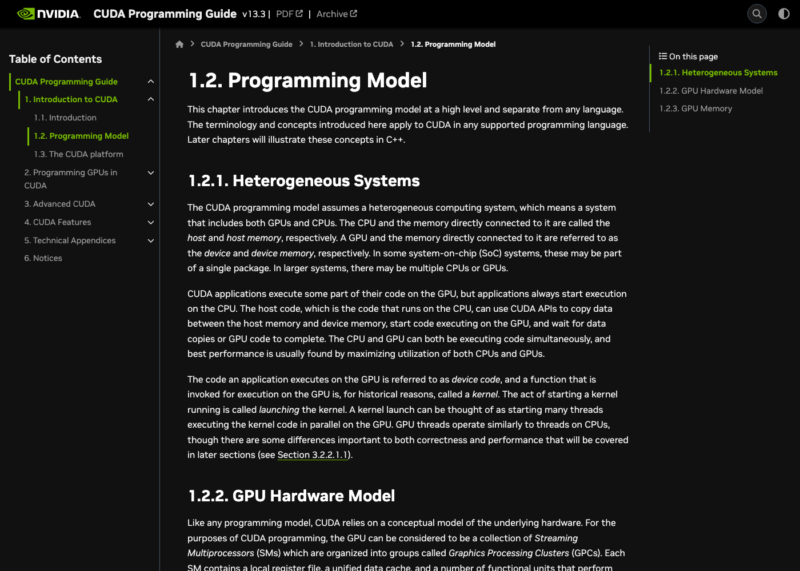
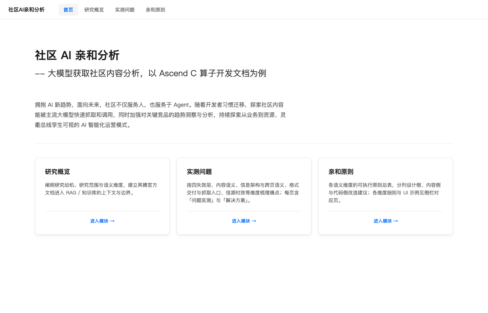
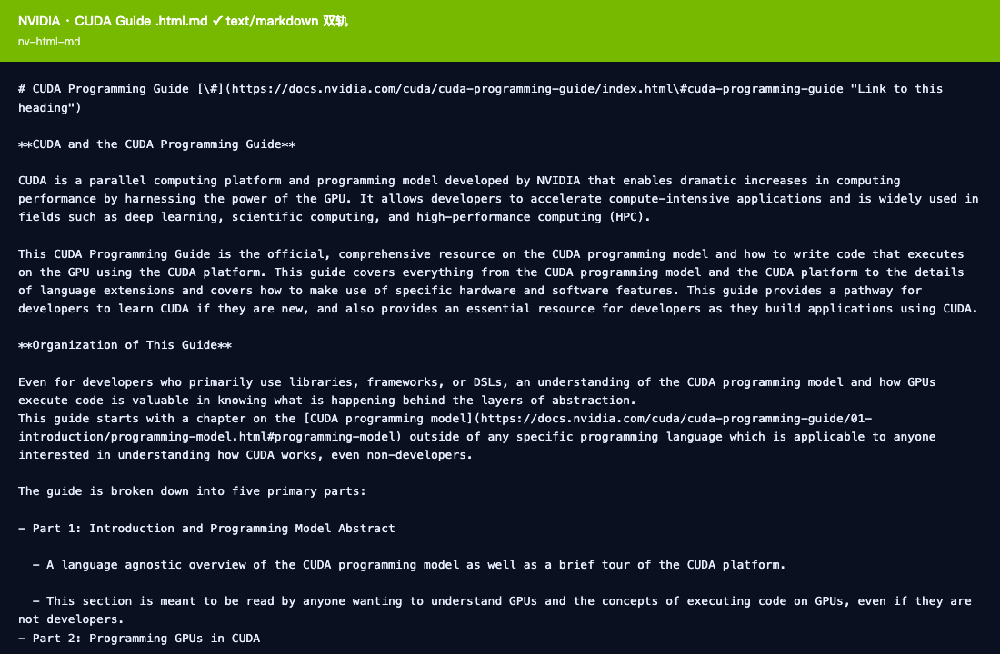
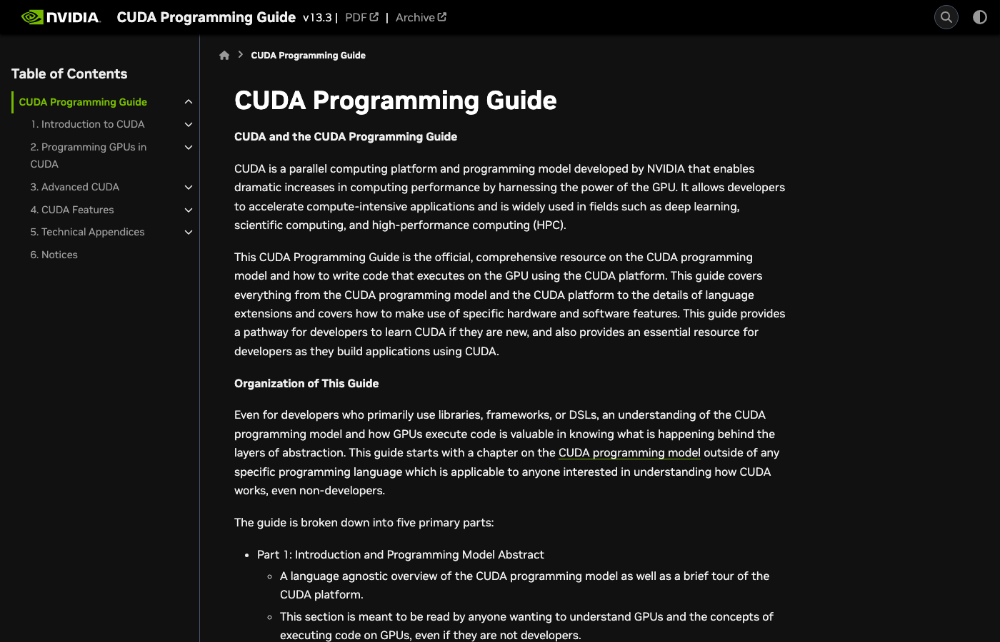

基于 35 条亲和原则全量实测 · 精简版（仅展示非达标项）
| 诊断日期 | 2026-07-07 |
| 诊断对象 | CANN asc-devkit · 算子开发文档 |
| 文档站 URL | https://gitcode.com/cann/asc-devkit/tree/master/docs |
| 审计分支 | master（稳定版标签：9.1.0） |
| 审计方式 | 联网大模型问答实测 + 无 JS 抓取 + DOM/元数据静态审计 + 内容规则检测 |
| 采样页面 | quick_start.md · asc_950_feature_guide.md · docs/guide/index.md · docs/api/README.md · docs/guide/编程指南/编程模型/编程模型概述.md |
| 检测项 | 结果 | 说明 |
|---|---|---|
/llms.txt | ✗ 缺失 | 返回 SPA HTML 壳层（3.5 KB），非机器可读文件 |
/llms-full.txt | ✗ 缺失 | 未检测到，同上 |
/robots.txt | ✓ 放行 | Disallow: /search, /*?*, /child-app/*, /v1/*（文档路径未屏蔽） |
/sitemap.xml | △ 空集 | 返回 200 但 <urlset> 为空；真实 sitemap 路径极长且仅含仓库渲染页 |
<link rel="llms"> | ✗ 缺失 | 文档页 <head> 无任何机器源声明 |
/raw/branch/master/…md 双轨 | ✗ 返回壳层 | raw URL 返回 SPA HTML，非真实 Markdown；/-/raw/master/ 同 |
/blob/master/…md SSR | ✓ SSR 有效 | blob 页 SSR 渲染正文（quick_start.md：50 <p>、18 H 标签已在 HTML 中） |
| 失效层 | 命中数（缺失+待改进） | Barnett FP | 代表症状 |
|---|---|---|---|
| P0 · 抓不到 | 2 条（1 缺失 · 1 待改进） | FP1 机器发现层 | llms.txt 缺失；raw URL 返回壳层 |
| P1 · 找不准 | 6 条（3 缺失 · 3 待改进） | FP6 版本滞后 | 无 softwareVersion；无 dateModified；JSON-LD 字段仅 4 个 |
| P2 · 读不懂 | 5 条（0 缺失 · 5 待改进） | FP3/FP4 图/表语义 | 图片 alt 重复；表格无 caption；警示块无 data-admonition-type |
| P3 · 读不顺 | 8 条（2 缺失 · 6 待改进） | FP5/FP7 HTML 适配 | 双轨 raw URL 失效；无 Playground；FAQ 无结构化 |
总体判断：asc-devkit 在 内容质量（步骤列表化、验证区块、锚点、代码语义）方面表现良好， 但在 机器可发现层（llms.txt 缺失、原始 Markdown URL 失效）和 元数据结构化（JSON-LD 残缺、无版本/日期字段）方面存在系统性短板， 导致 RAG 入库后版本漂移风险高、信源权威性难以机器识别。
按四层缺陷分组，每个命中问题展示：问句 → 模型回答 → 洞察 → 根因 → 关联原则
GET https://gitcode.com/llms.txt → HTTP 200，但响应体为 SPA HTML 壳层（3,576 bytes），含 <script type="module"> 等前端 JS，非 LLM 协议要求的机器可读文本。
页面 <head> 无 <link rel="llms"> 或 <link rel="alternate" type="text/markdown"> 声明。
/sitemap.xml 返回空 <urlset>。
/raw/branch/master/docs/quick_start.md → HTTP 200，但返回 SPA HTML（3,576 bytes），非 Markdown 文本。
/blob/master/docs/quick_start.md → SSR 渲染正常（249 KB HTML，含 50 <p> 标签和代码块）。
无 <link rel="alternate" type="text/markdown"> 头部声明。
/raw/branch/ 路径，未在服务端区分 raw 请求与页面请求搜索引擎同时返回blob/master/和blob/9.1.0/两个版本的 quick_start.md，模型无法区分哪个是主推稳定版。JSON-LD 无softwareVersion字段。页面 <head> 仅显示分支名 "master"，无 SemVer。
@type 为 SoftwareSourceCode，仅含 4 个字段，无 softwareVersion<time datetime> 标签和 JSON-LD dateModified 字段。全部采样页面：<time>标签数 = 0；JSON-LD 无dateModified/datePublished；页面显示"22 minutes ago"等相对时间（仅视觉，非机器可读）。
所有页面 JSON-LD 均为固定模板：@type: SoftwareSourceCode· 仅含 name / codeRepository / programmingLanguage / author 四字段。
缺少：@type=TechArticle（或 HowTo）·headline·description·datePublished·dateModified·softwareVersion·inLanguage·keywords
表格链接文字为"asc_float2hif8（废弃）"，存在专属文件 asc_float2hif8_deprecated.md；但 HTML 中data-status= 0，无 JSON-LDdeprecated-since字段，无页顶提示框指向替代 API。
quick_start.md 包含 2 张截图（cloudIDE.png / webIDE.png），两张图片的 alt 均为"云平台"，无差异。chunk 提取时两张图片只留"云平台"文字，无法区分内容。模型无法描述界面细节。
<figcaption> 或图意转写段落联网大模型能正确答出"Reg矢量计算API列表"（来自 SSR 渲染的表格文字）。但：全部采样表格<caption>= 0，<th scope>= 0。chunk 切片时行数据缺乏表名锚点，"序号 1 RegBase 架构…"在孤岛 chunk 中语义不完整。
quick_start.md 有 9 个 GFM Alert 块（markdown-alert-tip × 1, note × 3, important × 1 等），标题文字已是真实文本节点（"选择建议""使用说明"等），但开放标签仅有class="markdown-alert markdown-alert-note"，无data-admonition-type="note"。chunk 解析器需理解 CSS class 语义才能识别警示类型。
仓库有 README.md（中文）和 README_en.md（英文），fork 也有 README_en.md；但所有页面 <head> hreflang 数组为空。搜索引擎将两个语言版本视为独立页面，无互相关联信号，可能导致重复内容惩罚。
guide/index.md 包含多个 FAQ 条目（"核函数运行验证时算子存在精度问题""运行验证时 AllocTensor/FreeTensor 失败"等）但均以列表链接形式组织，无 FAQPage JSON-LD，问答前缀无统一格式（Q: / A: 不存在）。模型搜索时能找到链接，但无法直接提取结构化问答对。
API 文档代码块无"在线尝试"按钮。禁用 JS 后无静态降级代码块。CANNLab 云开发环境以外部链接形式存在于 quick_start.md 中，但代码块与 CANNLab 无直接跳转集成。
quick_start.md 单页"以下"出现 20 次；典型用例："以下为本开源仓源码编译…基础依赖条件"——"以下"后接列表，chunk 切片若在此处断开，"以下"指代对象丢失。"以下命令" "以下步骤"等模式在操作类文档中大量出现。
quick_start.md 已遵循"环境准备 → 验证 → 编译 → UT"的固定模式，但全文 data-pattern 出现 0 次。RAG 无法通过属性区分"前提条件"区块、"验证步骤"区块与"操作步骤"区块。
docs 目录无 Glossary 文件；"AscendC" 与"Ascend C"（含空格）在不同文档中混用；"接口"与"API"在同页有时交替使用。无结构化术语接口供 RAG 查询时进行同义词归并。
快速入门文档提到"DevContainer 基于 VS Code Dev Containers…Ascend 驱动仅支持 Linux"（隐含不支持 Windows），feature_guide 表格有"不涉及"/"资料开发中"文字标注。但全文无 data-boundary="unsupported" 属性，"不支持"场景散落于正文而非独立边界声明块，模型可能产生幻觉。
llms.txt 文件，按版本分组列出各分支/tag 的主要文档 URL（master 分支 + 9.1.0 稳定版）<link rel="llms" href="/llms.txt"><link rel="alternate" type="text/markdown">。<link rel="alternate" type="text/markdown" href="…raw…">softwareVersion；页面 H1 下方无版本 badge；master 与 9.1.0 tag 在搜索结果中并列，模型无法区分主推版本。"softwareVersion": "9.1.0"（稳定版分支）/ "master"（开发版）<time datetime="2026-07-04T...">3 hours ago</time>dateModified（取 git commit 时间）和 datePublished（取文件首次 commit 时间）data-status="deprecated" 和 data-since="9.x""lifecycleStatus": "deprecated"<link rel="alternate" hreflang="zh"> 和 hreflang="en"> 互相指向；加 hreflang="x-default" 指向中文版maintainer 字段data-admonition-type；自定义标题（"选择建议"）不对应标准类型名，chunk 解析器需额外逻辑。> [!IMPORTANT] 使用说明data-admonition-type="note"，便于 chunk 解析器按语义类型提取data-pattern="prerequisite"/"steps"/"verification"/"reference"；JSON-LD 补 HowToSection / HowToStepdata-boundary="supported"/"unsupported"；JSON-LD 补 contraindication 字段描述不支持场景data-llm-summary 属性标注段落核心结论句；JSON-LD abstract 字段| 优先级 | # | 原则 | 文档内容 | 设计 UI | 前端/管道 | 状态 |
|---|---|---|---|---|---|---|
| P0 | 1 | llms.txt 部署 | 维护仓库根 llms.txt | 页脚机器入口链接 | 自动生成 + 头部声明 | |
| P0 | 24 | 双轨交付 | — | — | 修复 raw 路由 + link rel alternate | |
| P1 | 6 | 版本外显 | README 顶部版本说明 | 版本 badge | JSON-LD softwareVersion | |
| P1 | 7 | 明确更新日期 | — | — | <time datetime> + JSON-LD dateModified | |
| P1 | 8 | 元数据丰富化 | — | — | JSON-LD 模板化（HowTo/TechArticle） | |
| P1 | 5 | 失效状态显化 | 废弃页顶 CAUTION 块 | 独立样式 | data-status + JSON-LD lifecycleStatus | |
| P1 | 3 | 多语言锚点 | 中英术语对照表 | — | hreflang 模板化 | |
| P1 | 10 | 内容可追溯性 | CHANGELOG.md | — | commits API + JSON-LD maintainer | |
| P2 | 14 | 图文图意 | 描述性 alt + 图意转写 | figcaption 排版 | <figure><figcaption> + chunk 策略 | |
| P2 | 20 | 表格语义 | 前置说明句 | 设计规范纳入 | caption 注入 + th scope + chunk 序列化 | |
| P2 | 21 | 安全警示语义 | 统一前缀写法 | 颜色+文字双重区分 | data-admonition-type 注入 | |
| P2 | 18 | 格式规范统一 | 规范补充 | — | Lint 规则 | |
| P2 | 23 | 内容可访问性 | — | <article> 包裹 | CMS alt 强制校验 | |
| P3 | 28 | FAQ 结构化 | Q+A 格式规范 | FAQ 独立容器 | FAQPage JSON-LD | |
| P3 | 33 | Playground | — | 代码块旁入口按钮 | CANNLab 集成 + SSR 静态降级 | |
| P3 | 32 | 消除模糊指代 | "以下"→明确对象 | — | CMS Lint 告警 | |
| P3 | 29 | 内容结构模式 | — | 区块视觉差异化 | data-pattern 自动注入 | |
| P3 | 31 | 术语一致性 | glossary.md | — | 术语 Lint + Glossary JSON API | |
| P3 | 35 | 明确边界 | 支持/不支持对比表 | 边界表格独立样式 | data-boundary + JSON-LD contraindication | |
| P3 | 26 | 结论前置 | 段首写结论 | — | data-llm-summary + JSON-LD abstract |
同一算子开发场景 · 平台对比 · 2026-07-07
比的是什么？同样是 Ascend C 算子开发文档，昇腾社区是官网渲染站（hiascend.com），GitCode asc-devkit 是仓库 Markdown 文档。
谁整体更好？GitCode 更适合作为 RAG 内容源——Markdown 源更干净，步骤/代码/验证区块更完整；但两边在机器发现层和元数据上都严重缺失，AI 仍可能答错版本。
先改什么？两边都应先做 P0：#1 部署 llms.txt + #24 打通机器可读源（昇腾放行 source 路径，GitCode 修复 raw 路由）。
| 对比维度 | 昇腾社区 | GitCode asc-devkit | 一句话 |
|---|---|---|---|
| 机器能不能发现文档 | 差 — llms.txt 404；source 被 robots 封 | 差 — llms.txt 是 SPA 壳；raw 路由坏了 | 都差，机制不同 |
| 内容能不能被 AI 读懂 | 差 — 图/Tab/热区大量丢失 | 较好 — Markdown 源，步骤/代码干净 | GitCode 更好 |
| 版本/元数据是否可信 | 差 — 8.x 与 9.0 混用 | 差 — master 与 9.1.0 无 SemVer | 都差 |
| 同一场景 | Ascend C 算子开发（环境准备 → 核心开发 → 验证） |
| 昇腾社区 | hiascend.com 官网渲染站 · 主推 CANN 9.0.0 |
| GitCode | gitcode.com/cann/asc-devkit 仓库 Markdown · 稳定版 9.1.0 + master |
| 审计方式 | 昇腾：14 项实测症状 + 站点探测（研究站）｜ GitCode：35 条原则全量实测（本报告） |
AI 读文档的路径：
| 失效层 | 用户会遇到什么 | 昇腾社区 | GitCode asc-devkit | 谁更好 |
|---|---|---|---|---|
| P0 抓不到 | AI 根本找不到官方文档，或找不到机器源 | llms.txt 404；/doc_center/source/ 被 robots 封；sitemap 无 source 路径 |
llms.txt 返回 SPA 壳；/raw/branch/ 返回 HTML 非 Markdown；sitemap 空集 |
平（都差） 昇腾：有好源不让抓 GitCode：源在仓库但路由坏了 |
| P1 找不准 | AI 答错版本，新旧内容混用 | 8.x 与 9.0 文档并存；JSON-LD 无 softwareVersion；联网问答官方信源仅 22%–67% | master 与 9.1.0 tag 无 SemVer 区分；JSON-LD 仅 4 字段；无 dateModified | 平（都差） GitCode 元数据更空白 |
| P2 读不懂 | AI 读不到图、Tab 内容、表格细节 | 架构图仅文件名入库；28 个热区无文本；Tab display:none 隐藏安装命令；代码行号混入 |
图片 alt 均为「云平台」；表格无 caption；警示块无 data-admonition-type（但 Markdown 源整体干净） | GitCode 更好 无 Tab 隐藏；代码块无行号污染 |
| P3 读不顺 | AI 答得含糊，chunk 切片错乱 | ~224KB 渲染 HTML 噪声大；链接锚文本「LINK」；无机器可读 Markdown 源 | 「以下」单页出现 20 次；FAQ 无结构化；无 Playground 入口 | GitCode 略好 内容结构更规整 |
| 旅程 | 代表问句 | 昇腾 | GitCode | 差异原因（一句话） |
|---|---|---|---|---|
| ① 感知了解 | 架构图各层分别是什么？ | ✗ | △ | 昇腾图意未入库；GitCode README 有文字列表但截图 alt 弱 |
| ② 学习知识 | HelloWorld 样例代码在哪？ | △ | ✓ | GitCode guide/index 直链清晰；昇腾链接锚文本劣化 |
| ③ 环境准备 | 离线安装命令是什么？ | ✗ | ✓ | 昇腾 Tab 面板未入库；GitCode quick_start 步骤在正文 |
| ③ 环境准备 | 这是哪个版本的文档？ | ✗ | ✗ | 两边均无 SemVer 外显，版本混用风险高 |
| ④ 核心开发 | 核函数代码能直接复制编译吗？ | △ | ✓ | 昇腾 highlighttable 行号污染；GitCode 原生 Markdown 代码块 |
| ⑤ 验证结果 | 运行成功的判断标准是什么？ | △ | ✓ | GitCode quick_start 有独立「环境验证」专节 |
<link rel="llms">/doc_center/source//raw/branch/ 返回真实 Markdown| 总体判断 | 结论 |
|---|---|
| 谁更适合 RAG 入库（现状） | GitCode 略胜 — Markdown 源、无 Tab 隐藏、代码/步骤更干净 |
| 谁更需要平台级改造 | 昇腾 — robots 封源 + 渲染壳层 + 图/热区/Tab 三重丢失 |
| 谁更需要元数据工程 | GitCode — JSON-LD 几乎空白，版本/日期完全不可机器读 |
| 改造方案可复用性 | llms.txt 模板、JSON-LD 规范、图意转写写作规范可两边共用；平台路由（source vs raw）需分别处理 |
| 检测项 | 昇腾社区 | GitCode asc-devkit | 结论 |
|---|---|---|---|
/llms.txt | ✗ 404 | ✗ SPA 壳层 | 都失败 |
/robots.txt | ⚠ Disallow source | ✓ 文档路径未屏蔽 | GitCode 更好 |
/sitemap.xml | △ 1 万条渲染页，0 条 source | △ urlset 为空 | 都不可用 |
| 机器源可访问 | ✗ source 被 robots 封 | ✗ raw URL 返回 SPA | 都失败 |
| 首屏正文（禁 JS） | △ 有正文但噪声大 | ✓ blob SSR 有效 | GitCode 更好 |
| # | 原则 | 昇腾 | GitCode | 谁更好 |
|---|---|---|---|---|
| 1 | llms.txt | 缺失 | 缺失 | 平 |
| 2 | 内容可检索 | 待改进 | 达标 | GitCode |
| 6/7/8 | 版本/日期/元数据 | 缺失 | 缺失 | 平 |
| 12/13 | 步骤/验证区块 | 待改进 | 达标 | GitCode |
| 14 | 图文图意 | 缺失 | 待改进 | GitCode |
| 15 | 图片热区 | 缺失 | 不适用 | — |
| 19 | 代码语义 | 待改进 | 达标 | GitCode |
| 22 | 隐藏语义 | 缺失 | 达标 | GitCode |
| 24 | 双轨交付 | 缺失 | 缺失 | 平 |
| 严重度 | 昇腾典型命中 | GitCode 典型命中 |
|---|---|---|
| 未入库 | 图片图意、机器发现层 | llms.txt |
| 完全丢失 | 图片热区（28 个 area） | — |
| 抓取差 | Tab 面板、折叠区 | raw URL 返回壳层 |
| 劣化入库 | 渲染 HTML、链接 LINK、代码行号 | 图片 alt 重复、「以下」指代 |
| 语义未结构化 | 元数据、跨页关系 | 版本/日期/JSON-LD |
昇腾严重度更偏「内容根本没进库」；GitCode 更偏「进了库但机器读不准」。
对照数据来源：昇腾社区 AI 亲和研究站 · 对比报告 v2.0 · 2026-07-07
四层定性对比 · 典型问题对照 · 2026-07-14
比的是什么？同属「GPU/NPU 编程指南」场景：NVIDIA 以 CUDA Programming Guide 为代表；昇腾以 hiascend.com Ascend C / CANN 官方渲染文档为代表。
谁整体更强？NVIDIA 在「抓得到 / 有机器源」上明显领先（真 llms.txt + .html.md 双轨返回真实 Markdown）；昇腾社区在内容语义深度上并非全输，但典型问题集中在图/Tab/热区与 robots 封源，导致 RAG 经常「找不到官方」或「读丢关键步骤」。
昇腾优先学什么？先对齐 NVIDIA 的机器发现层：部署产品线 llms.txt、放行 source、提供可直接抓取的 Markdown/纯文本轨。
| 对比维度 | NVIDIA CUDA 文档 | 昇腾社区（hiascend） | 一句话 |
|---|---|---|---|
| 机器能不能发现文档 | 强 — 站级 + CUDA 产品级 llms.txt；robots 明确面向 AI 爬虫 Allow→ 见截图证明 |
弱 — llms.txt 404；robots Disallow /doc_center/→ 见截图证明 |
NVIDIA 更好 |
| 版本 / 元数据是否可信 | 中 — 页头可见 v13.3（人读），但抽样页缺 JSON-LD / softwareVersion → 见截图证明 |
弱 — 8.x 与 9.0 混用；联网官方信源占比不稳 | NVIDIA 略好 |
| 内容能不能被 AI 读懂 | 较强 — SSR 正文完整；架构图有 figcaption；.md 轨纯净 → 见截图证明 |
弱 — 图意/热区丢失；Tab 隐藏安装命令；代码行号污染 | NVIDIA 更好 |
| 机器层是否读得顺 | 强 — 官方双轨 Markdown；目录结构（Part 1–5）清晰 → 见截图证明 |
弱 — ~224KB 渲染噪声；锚文本「LINK」；无可用机器源 | NVIDIA 更好 |
以下截图来自 2026-07-14 实测（Chrome headless）。左侧偏 NVIDIA，右侧偏昇腾社区。

/cuda/llms.txt 返回 200，按 Install / Programming / Architecture 分组，链到 .html.md
https://www.hiascend.com/llms.txt 实测 HTTP 404，无产品级机器目录
robots.txt 明确面向 LLM/AI crawler，Allow: /，并列出多份 sitemap
robots.txt 含 Disallow: /doc_center/ —— 机器源路径被屏蔽（已高亮）
softwareVersion 机器字段（页面源码抽检无 ld+json）

…/index.html.md 返回 text/markdown 实体（真双轨），RAG 可绕开渲染壳噪声
| 场景对齐 | 异构编程入门 → 编程模型 → 环境/安装 → Kernel/算子开发 → 验证与参考 |
| NVIDIA | docs.nvidia.com/cuda/cuda-programming-guide · 抽样页含 Programming Model、Quick Start / Installation（经 llms.txt 索引） |
| 昇腾社区 | hiascend.com CANN / Ascend C 文档 · 复用研究站 14 项症状 + 站点探测结论（llm-knowledge-research） |
| 对比深度 | 四层定性 + 典型问题（不做 NVIDIA 全量 35 条打分；不与 GitCode 数字混比） |
四层 = AI 读文档的失败路径：
| 失效层 | 典型问题（用户侧感知） | NVIDIA CUDA | 昇腾社区 | 谁更好 |
|---|---|---|---|---|
| P0 抓不到 |
典型问：站有没有给 AI 的机器目录？爬虫能不能拿到 Markdown？ 关联原则 #1 #2 #24 |
✓ /llms.txt 与 /cuda/llms.txt 均 200，按产品/场景分组链接✓ robots 写明面向 AI crawler， Allow: /，带 Content-Signal✓ 双轨： …/index.html.md 返回 text/markdown 实体（实测 4KB+ 真 MD）△ 根路径 /sitemap.xml 404，但 robots 已挂多份 sitemap 索引
|
✗ llms.txt 404✗ robots Disallow /doc_center/（source 被封）✗ 机器源不可用；.md URL 常返回 SPA 壳 △ 有渲染页正文，但发现层失效 |
NVIDIA 差距最大：NVIDIA「主动喂 AI」；昇腾「有源不让抓」 |
| P1 找不准 |
典型问：这是哪个版本的编程指南？联网回答会不会飘到社区二手帖？ 关联原则 #6 #7 #8 |
✓ 站点内容可被搜索引擎稳定召回（Programming Model / Memory Model 等） △ 抽样 HTML 无 JSON-LD、 softwareVersion、<time>△ 版本更多靠 Toolkit/发行版上下文，页头机器字段弱 |
✗ 8.x 与 9.0 文档并存，易版本漂移 ✗ JSON-LD 残缺；联网问答官方占比曾测到 22%–67% ✗ 「最新版」语义模糊，机器难区分主推版本 |
NVIDIA 略好 两边元数据都可补；昇腾更易混版本 |
| P2 读不懂 |
典型问：架构图 / 线程块示意图是什么意思？离线安装命令在哪个 Tab？代码能不能直接复制？ 关联原则 #14 #15 #19 #22 |
✓ Programming Model 页 SSR：~66 段正文、多图带描述性 alt + figcaption（如 Grid of Thread Blocks） ✓ .md 轨含图意语境，chunk 不易只剩文件名 △ 少量导航装饰图 alt 仍为站点名「CUDA Programming Guide - Home」 |
✗ 架构图常只入库文件名（图意丢失） ✗ 热区（area）无文本清单 · 完全丢失 ✗ Tab display:none → 离线安装等面板未入库✗ highlighttable 导致代码行号污染 |
NVIDIA 昇腾「读不懂」层症状最密 |
| P3 读不顺 |
典型问：文档大纲怎么分层？链接点过去是什么？HTML 噪声会不会切坏 chunk？ 关联原则 #16 #17 #24 #27 |
✓ Guide 自带 Part 1–5 导学结构，标题任务明确 ✓ 优先喂 .md 时可绕开渲染壳噪声 △ HTML 仍含导航/TOC，但相对可控 |
✗ 渲染页约 224KB，导航/壳层噪声大 ✗ 链接锚文本「LINK / 点击这里」类劣化 ✗ 无可用双轨 → RAG 被迫吃脏 HTML |
NVIDIA 双轨策略直接决定 chunk 干净度 |
| 旅程 | 代表问句（两端对齐） | NVIDIA | 昇腾社区 | 典型差异 |
|---|---|---|---|---|
| ① 感知了解 | 编程模型里 Host / Device / Kernel 分别是什么？架构图怎么读？ | ✓ | ✗ | NV 有正文 + figcaption；昇腾图意常未入库 |
| ② 学习路径 | 官方推荐从哪一章开始读到高级特性？ | ✓ | △ | NV Part 1–5 路径写在首页；昇腾跨页关系弱 |
| ③ 环境准备 | Linux 首次安装 / 离线安装命令在哪？ | ✓ | ✗ | NV 由 llms.txt 链到 Install Guide；昇腾 Tab 内容易丢 |
| ③ 版本确认 | 当前文档对应哪一版 Toolkit / CANN？ | △ | ✗ | 两边页级元数据都弱；昇腾更易 8.x/9.0 混答 |
| ④ 核心开发 | 线程块如何映射到 SM？共享内存 / Unified Memory 边界？ | ✓ | △ | NV 文本可检索性强；昇腾依赖渲染页质量 |
| ⑤ 机器入库 | 有没有可直接喂 RAG 的 Markdown / llms 目录？ | ✓ | ✗ | 这是差距最大的典型问题：NV 已产品化；昇腾缺失 |
softwareVersion / dateModified，减少「最新版」口语llms.txt（参考 NV 的场景化链写法）/doc_center/source/，sitemap 收录 source/sitemap.xml 可做跳转/索引，降低发现成本| 总体判断 | 结论 |
|---|---|
| 谁更适合 RAG 入库（现状） | NVIDIA — llms.txt + 真实 .md 双轨已闭环；昇腾卡在发现层与隐藏语义 |
| 昇腾最大短板 | P0 抓不到 + P2 读不懂 — 封源、图/Tab/热区、行号污染叠加 |
| NVIDIA 可复制经验 | ① 产品级 llms.txt 目录 ② .html.md 真双轨 ③ robots 对 AI crawler 声明友好 ④ 架构图 figcaption |
| 本页范围之外 | GitCode asc-devkit 见「④ 平台对比」；本菜单只对比 NVIDIA 官网 vs 昇腾社区官网 |
| 检测项 | 结果 | 说明 |
|---|---|---|
https://docs.nvidia.com/llms.txt | ✓ 200 | 产品线入口索引（含 CUDA Toolkit → /cuda/llms.txt） |
https://docs.nvidia.com/cuda/llms.txt | ✓ 200 | 按 Install / Programming / Architecture / API 分组，大量链到 .html.md |
/robots.txt | ✓ AI 友好 | 注释写明引导 LLM 到 Clean Markdown；Allow:/；多 Sitemap |
/sitemap.xml | △ 404 | 根路径空缺；真正 sitemap 写在 robots 里 |
…/index.html.md | ✓ text/markdown | Guide 首页与 Programming Model 页均返回真实 Markdown |
| Programming Model HTML（禁 JS curl） | ✓ ~62KB | 66 段 <p>、16 标题、多图带 figcaption；有正文 SSR |
| JSON-LD / <time> | △ 缺失 | 抽样页未检出结构化版本字段 |
昇腾侧对照来源：社区 AI 亲和分析（研究站） · NVIDIA 抽测日期 2026-07-14 · 对比报告菜单⑤